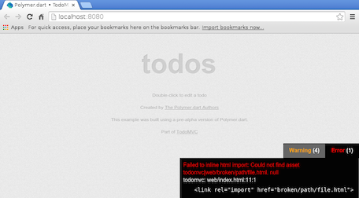

This page describes each stable release of polymer.dart, starting with 0.10. For information about earlier releases and interim versions, see the CHANGELOG.md tab of the polymer.dart pub page and the release announcements in the Dart web forum.
There were two primary goals of this update:
Starting from this release, it is now possible to consume core and paper elements using only Dart imports. For example, the following app has no HTML imports:
<paper-button>click here</paper-button>
<script type=”application/dart”>
import ‘packages/paper_elements/paper_button.dart’;
export ‘packages/polymer/init.dart’;
</script>
This is possible because of a new annotation which allows you to declare your
HTML dependencies inside your Dart files. Simply add @HtmlImport to your library
declaration, and supply it a relative or package: style path:
// Note: For package imports, use `package:` just like a normal dart import.
@HtmlImport(‘my_element.html’)
library my_element;
@CustomTag(‘my-element’)
class MyElement extends PolymerElement { … }
In Dartium, initPolymer will inject an HTML import into the document
dynamically. For deployment, a transformer will inline these into the main
document just like normal HTML imports.
By buying into this system throughout your entire app, you can remove all manual HTML imports and replace them with Dart imports. This has the benefit of allowing your program to be completely driven by Dart code, instead of both HTML and Dart. This in turn paves the way towards future support of deferred imports.
Note: The main package:polymer/polymer.dart file loads polymer.html this
way, which means that you no longer need to include an HTML import to
packages/polymer/polymer.html.
Caveat: Dartium does not support script tags in dynamically injected HTML imports. Even if the script is already loaded by your main program, it will still show a warning (see 22712). If you would like to build an element today which can be imported through either HTML or Dart without warnings, you can use this pattern which the new core and paper elements packages follow.
We are also releasing a new Polymer example which demonstrates how to use core and paper elements to make a responsive single page app with very little css and no HTML imports. See the tutorial here, live demo here, and the code here.
Up to this point, some features from the web_components package (such as HTML
imports) have not been very useable outside of Polymer. As of this release we
have made big strides towards removing this restriction.
@CustomElement works just like @CustomTag from Polymer, except it just registers
the element directly with the document via document.registerElement(...).
@CustomElement(‘my-element’)
class CustomElement extends HtmlElement {
CustomElement.created() : super.created();
}
This provides a declarative method of creating normal custom elements, without having to pay for all the Polymer features such as template binding and observables if you don’t need them.
web_components appsIn order to use these features outside of polymer, you will need to import
package:initialize/initialize.dart and call the run method. This is the
web_components equivalent to initPolymer().
web_components transformerThis is essentially the same as the original Polymer transformer, but with all the Polymer specific logic ripped out. Use it just like the Polymer transformer:
transformers:
- web_components:
entry_points:
- web/index.html
This will inline all your HTML imports and bootstrap your application with all the Dart script tags that were contained in those imports.
initPolymer() method now returns a Future<Zone> instead of a Zone.
This is not completed until all @HtmlImport imports have finished loading.
See the changelog for
more information and a few example migration paths.1.9.0-dev.7.1 sdk or higher.There was a lot of work to make this happen, and for those interested we have made the original design docs available here:
This release updates polymer to match JavaScript’s version 0.5.1.
With this release, platform.js and platform.concat.js have been renamed
webcomponents.min.js and webcomponents.js. Also, polymer.concat.js is
now polymer.js, and the minified version is polymer.min.js.
This release updates polymer to match JavaScript’s version 0.4.2.
With this release, it is no longer necessary to write dart_support.js in
entrypoint files. You can find more details
here.
This new release updates polymer to match the current release (0.4.1) of polymer.js.
Together with this release, we updated core_elements to 0.3.0 and
paper_elements to 0.4.0. This brings the elements packages up to date with the
changes in the JavaScript version 0.4.1.
A number of elements were renamed, below is a summary:
core-dropdown => core-dropdown-menucore-popup-menu => core-dropdowncore-popup-overlay => core-dropdown-overlaypaper-dropdown => paper-dropdown-menuThere was also one new element added, core-a11y-keys. This element helps when
dealing with key events, and manages all the browser differences for you.
This new release updates polymer to match the current release (0.4.0) of polymer.js.
The polymer-specific polyfills have been moved from platform.js into the polymer package. This should be completely transparent.
This release updates the web_components package to version 0.7.0. This brings
platform.js to the 0.4.0 release, with the addition of two cherrypicks,
3627e
and
7c8b9.
The platform.js script has been stripped down, and is no longer required in
Chrome or Dartium. You can now remove this from your projects for development,
and it will be injected when running pub build or pub serve. Note you still need
to include dart_support.js in your application.
If you would like the option to not inject platform.js at all in the built output (if you are deploying to chrome exclusively), please star this bug http://dartbug.com/20865.
Together with this release, we updated core_elements to 0.2.1, and
paper_elements to 0.2.0. This brings the elements packages up to date with
the changes in the JavaScript version 0.4.0. Two new elements were added
(paper_dropdown and core_popup_menu), and one was removed
(paper_menu_button_overlay).
This new release updates polymer to match the current release (0.3.5) of polymer.js.
There should be no noticeable changes with this release.
Internally this release includes updates to the web_components package to
version 0.6.0. This brings platform.js to the latest JavaScript version
(including changes in master for ShadowDOM at
57232d).
This is because the polyfills at version 0.3.5
had some bugs in IE that got fixed afterwards.
One bug worth highlighting: platform.js also introduced a subtle bug on querySelector when children of a host node are not distributed to the shadow tree (see details). The situation when this happens is rare, so we expect few people will run into this, but we decided to bump our version as a breaking change just in case.
Together with this release, we updated core_elements to 0.2.0+1, and
paper_elements to 0.1.1+2. This brings the elements packages up to date with
the changes in the JavaScript version 0.3.5. The main highlights are that
a new element was added (core-dropdown), and icons in core_elements moved
two levels up in the directory layout. So for example, you now need to import
packages/core_elements/image_icons.html instead of
packages/core_elements/core_icons/iconsets/image_icons.html.
This release contains some new productivity features worth highlighting.
To use Polymer 0.12.1, you must use Dart 1.6.
Polymer 0.12.1 depends on Dart 1.6. (This dependence started with interim version 0.12.0+1.)
Visible warnings:
When you run pub serve we are doing lots of checks to
detect common mistakes that have tripped us in the past.
Many of us used to ignore warning messages because
they were only reported in the console.
So, starting with polymer-0.12.1, they will be more visible.
When you you load your app via pub serve,
we’ll show you on the bottom-right corner of your page
a collapsible dialog with these messages. For example:

Fail forward:
Some errors are clear indications that something is really wrong,
for example a broken import.
We heard that many were frustrated that when there was an error like this,
pub serve would fail and not serve you the content at all.
Now, we’ll try to fail forward and serve your application as if
the piece that caused the error wasn’t there.
We don’t want to deploy a broken app though,
so we’ll continue to fail and stop the pub build process if
the app still contains error at that point.
Better highlighting of errors:
We also heard that it is hard to find the errors in the console logs
because they are mixed with all the warnings and HTTP messages
from pub serve.
So the new dialog will display errors in a separate tab.
There is unfortunately a bunch of boilerplate involved in declaring an entry point or a custom element. For example, you need to include certain script tags, imports, include a @CustomTag, call super.created, etc. To make this easier, we have two commands that can create things for you. For example, you can invoke:
pub run polymer:new_element element-name [-o out_dir]
And we’ll create an example element for you. Or you can invoke:
pub run polymer:new_entry web/index.html
And we’ll create an entry point and make sure to add it to the polymer transformer section in your pubspec file.
Besides these new features, polymer 0.12.1 has some bug fixes with respect to allowing bindings inside url attributes, and build options to control how css is inlined. For more details check the change logs in the package site here.
There are many features, tweaks, and improvements we are still working on, but if you have ideas/suggestions on what can be done to improve your experience developing with polymer.dart, do let us know and file a request in our bug tracker.
We just uploaded a new stable version of the polymer, core, and paper packages, bringing us up to date with the latest release of polymer.js and its related libraries (js version 0.3.4 as of today).
Here’s what’s changed since 0.11.0+5.
This should make it much easier to use core and paper elements in your apps (example).
There is a variation for how to declare @published properties. Instead of writing this:
@published String foo;
We suggest you write this:
@published String get foo => readValue(#foo); set foo(String value) => writeValue(#foo, value);
The old style will continue to work, but the new style has a more predictable timing. In particular, say you use ‘foo’ in a binding, someone updates that binding, and later you read ‘foo’. The old style has no guarantees about what you’ll read out of ‘foo’. If notifications have been propagated through the system, you’ll see the latest value, but if not, you may see the old value. The new style guarantees that you’ll see the new value in the binding regardless of the state of the notifications. This also matches how things work in polymer.js elements.
A new annotation has been introduced that lets you define a property in terms of other observable properties. For example you can write:
@ComputedProperty('a + b')
String get aPlusB => readValue(#aPlusB);
You can find more details in the dart docs for ComputedProperty.
The syntax of property path changed. This is only relevant if you are not using polymer expressions, but use template-binding directly with its default syntax. (See the changelog for observe 0.11.0)
The fixes are especially around handling packages/ URLs,
URLs with bindings, sanitizing file names, CSS shim of link-rels,
and CSP support.
The core and paper packages have been updated, too. They now have the Dart API associated with the 0.3.4 js elements. Many of the examples have been updated to use some of the changes above (like the better js-interop features).
This release has a few important changes that will affect you when you upgrade your project.
platform.js used to be included in polymer.html,
but now you need to include it yourself.
This split helps have a clear separation between polymer and the polyfills.
platform.js has polyfills for many features that
are not available yet natively in browsers
(like html imports, and template binding).
One day, when browsers implement all these new standards,
platform.js will not be necessary,
but everything loaded by polymer.html will continue to be useful.
dart_support.js also used to be included as part of polymer.html.
Its main purpose is to complement what we have in platform.js to
make it work well with Dart.
It contains hooks to make dart2js understand
how platform.js patches the DOM,
and it contains extra logic to provide a Dart API for
custom elements written in JavaScript
(see web_components/interop.dart for details).
By having dart_support.js separate from platform.js
we were able to keep platform.js identical to
the one used in polymer.js projects.
So you can easily swap out one version of platform.js
for another if you want.
polymer.html defines the <polymer-element> element,
so you should import it before defining polymer elements.
Unless you define a polymer-element in the entry point of your app,
you no longer need to include polymer.html there
(platform.js and dart_support.js are all you need).
This follows a change in dart:html that affects all custom elements. Unfortunately, you won’t see a deprecation message. @deprecated is great to announce that you should call a different method, but it can’t indicate that you need to change a declaration.
A @published property is no longer reflected as an attribute,
for performance reasons.
Although @published continues to support two-way bindings,
changes in the property might not be visible through the normal HTML APIs
if you try to inspect the attribute
(for example, if you read node.attributes['attributename'])
or if you try to query for it using a CSS selector either in Dart code
or in a .css file.
To make a published property reflect back to an attribute,
change @published to @PublishedProperty(reflect: true).
Here are some examples that summarize the HTML code changes.
You used to write an app’s HTML code (say, web/index.html)
like this:
<link rel="import" href="packages/polymer/polymer.html"> <link rel="import" href="x_tag.html"> <body> <x-tag></x-tag> <script type="application/dart">export "package:polymer/init.dart";</script>
Instead, use code like this:
<script src="packages/web_components/platform.js"></script> <script src="packages/web_components/dart_support.js"></script> <link rel="import" href="x_tag.html"> <body> <x-tag></x-tag> <script type="application/dart">export "package:polymer/init.dart";</script>
For an element under web (say, web/x_tag.html),
you used to write HTML code like this:
<polymer-element name="x-tag">...</polymer-element> <script type="application/dart" src="x_tag.dart"></script>
Instead, use code like this:
<!-- in web/x_tag.html--> <link rel="import" href="packages/polymer/polymer.html"> <polymer-element name="x-tag">...</polymer-element> <script type="application/dart" src="x_tag.dart"></script>
For an element under lib (say, lib/components/x_tag.html),
you need to use one more ../ in the path to packages
than you might expect. For example:
<!-- in lib/components/x_tag.html--> <link rel="import" href="../../../packages/polymer/polymer.html"> <polymer-element name="x-tag">...</polymer-element> <script type="application/dart" src="x_tag.dart"></script>
For more information about paths, see dartbug.com/20076.
Here is a summary of what changed since our last stable release (0.9.5+2).
Interop with polymer-js elements works!
Polymer polyfills are now consolidated in the
web_components package.
Instead of our own shadow_dom.js,
we now can simply use a platform.js from
polymer-project.org.
The output of pub build no longer uses mirrors.
We replace all uses of mirrors with code generation.
You no longer need to use the @reflectable annotation!
@ObserveProperty('foo bar.baz') myMethod() {...} will
cause myMethod to be called when “foo” or “bar.baz” changes.
Errors that occur within bindings are no longer reported on a logger (which were silently hidden if you were not using loggers). We now throw errors asycnhronously, but are looking into making them throw synchronously (17789).
Declaring a polymer app requires an extra import:
<link rel="import" href="packages/polymer/polymer.html">
(See the todomvc example, or check out the tutorial.)
“noscript” polymer-elements are created by polymer.js, and therefore cannot be extended (subtyped) in Dart. They can still be used by Dart elements or applications, however.
@initMethod and @CustomTag are only supported on public methods and classes, respectively.
Because we remove uses of mirrors during pub build,
packages that rely on reflective APIs
(like observe, and polymer_expressions) need a special setup.
The polymer transformers take care of this for you automatically,
but if you don’t use our transformers and
you use observe or polymer_expressions on their own,
you’ll need to do something special in your app
(see observe’s changelog
for a simple workaround).